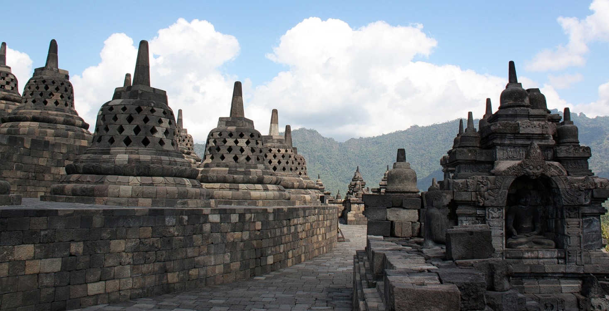
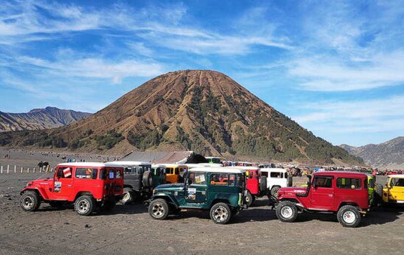
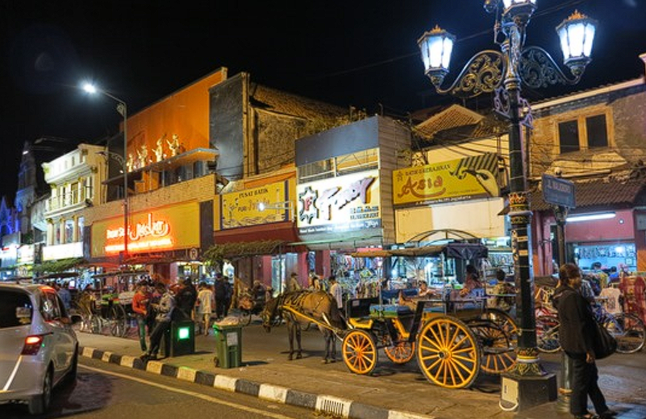

Tempat Wisata Terbaik di Indonesia
Berikut adalah beberapa tempat wisata terkenal dan indah di Indonesia:
Pulau Komodo
Pulau ini terkenal dengan populasi hewan purba yang unik, yaitu komodo, yang merupakan kadal terbesar di dunia. Pulau Komodo merupakan bagian dari Taman Nasional Komodo yang juga meliputi beberapa pulau lainnya di sekitarnya. Selain komodo, keindahan bawah laut di sekitar Pulau Komodo juga sangat menakjubkan, menjadikannya destinasi utama bagi pecinta alam dan penyelam.

Borobudur
Borobudur adalah candi Budha terbesar di dunia dan merupakan salah satu warisan budaya Indonesia yang paling terkenal. Candi ini terletak di Magelang, Jawa Tengah, dan dibangun pada abad ke-9 oleh dinasti Syailendra. Borobudur terdiri dari sembilan tingkat yang terhampar berbentuk piramida, dengan lebih dari 2.500 relief dan 500 stupa yang menggambarkan ajaran Budha.
Raja Ampat
Raja Ampat adalah gugusan kepulauan yang terletak di ujung barat Papua, Indonesia. Kepulauan ini terkenal karena keindahan alam bawah lautnya yang menakjubkan. Raja Ampat menjadi salah satu tempat terbaik di dunia untuk menyelam dan snorkeling karena keanekaragaman hayati lautnya yang luar biasa. Terumbu karang yang sehat, berbagai spesies ikan, dan pemandangan bawah laut yang spektakuler menjadikan Raja Ampat destinasi yang sangat dicari oleh para penyelam dan pecinta alam.

Patung Garuda Wisnu Kencana
Merupakan patung monumental yang menggambarkan Dewa Wisnu yang sedang naik di atas Garuda, burung mitos yang menjadi kendaraannya. Patung ini merupakan salah satu yang tertinggi di dunia, dengan tinggi sekitar 121 meter.

Monumen Nasional (Monas)
Ikon Jakarta yang terkenal, Monas adalah simbol kemerdekaan Indonesia. Pengunjung dapat naik ke puncaknya untuk menikmati pemandangan kota Jakarta. Dikenal sebagai Batavia pada masa kolonial Belanda, kawasan ini menawarkan bangunan-bangunan tua bersejarah, museum, galeri seni, dan banyak tempat kuliner lokal.
.png)
Gunung Bromo
Gunung ini merupakan salah satu dari beberapa gunung berapi aktif di Taman Nasional Bromo Tengger Semeru. Bromo terkenal dengan kawahnya yang terbuka dan pemandangan sunrise yang memukau.
Malioboro
Jalan Malioboro adalah jalan utama di pusat kota Yogyakarta yang terkenal dengan aktivitas belanja, kuliner, dan kehidupan malamnya. Jalan ini panjangnya sekitar 1 kilometer dan biasanya sangat ramai dengan wisatawan dan pengunjung lokal.
